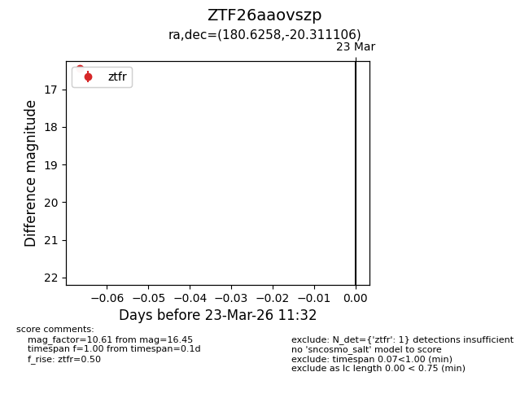
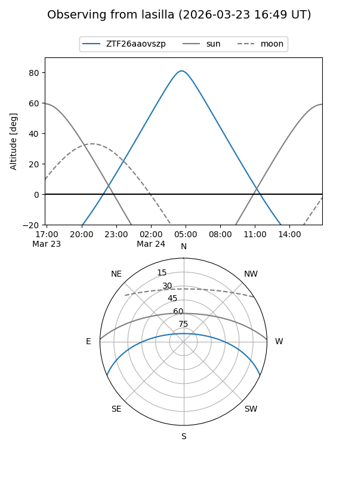
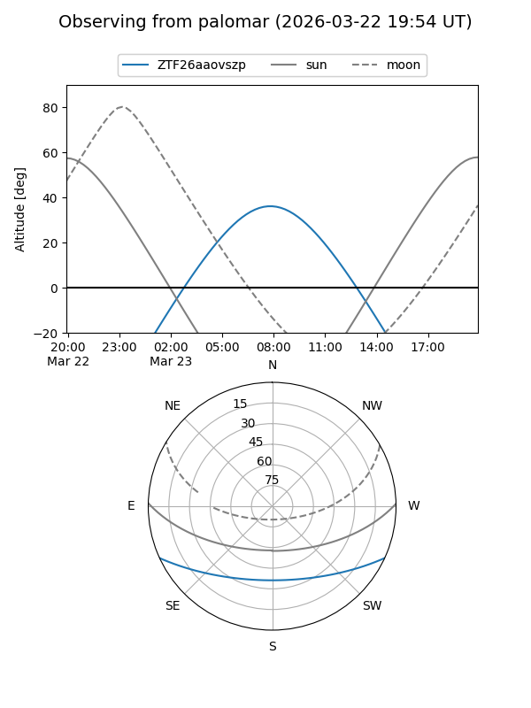

ZTF26aaovszp
Target ZTF26aaovszp at 2026-03-23 11:34
Aliases and brokers:
FINK: link
Lasair: link
ALeRCE: link
alt names
ZTF26aaovszp (ztf,fink_ztf)
Coordinates:
equatorial (ra, dec) = 180.6258,-20.31111
equatorial (HMS+DMS) = 12:02:30.20,-20:18:39.98
galactic (l, b) = (287.6408,+41.10315)
Flags:
Photometry:
last ztfr=16.45
1 ztfr detections
Lightcurve

Visibility


Additional plots